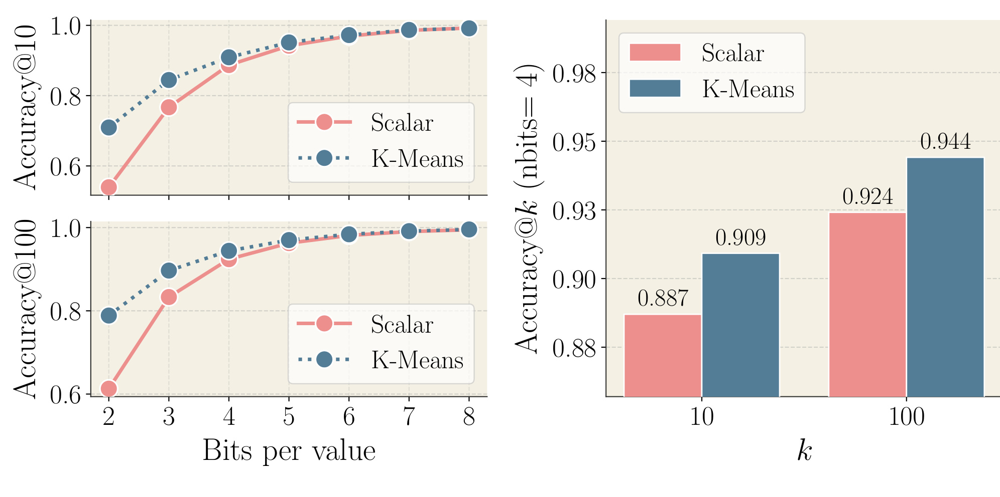
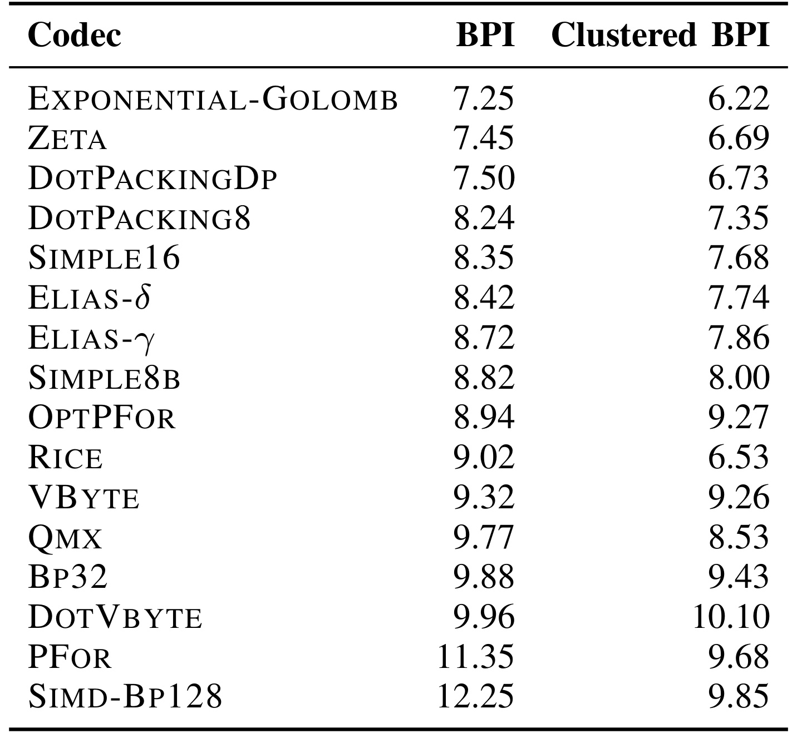
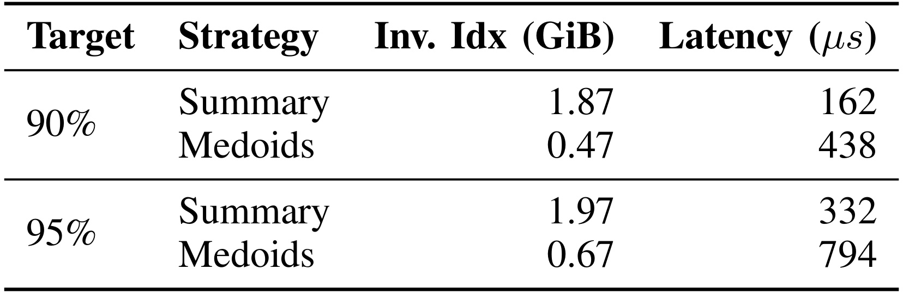
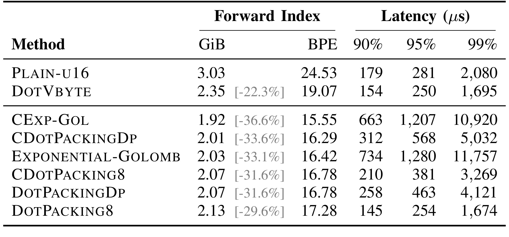
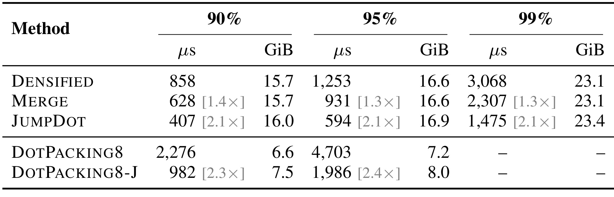
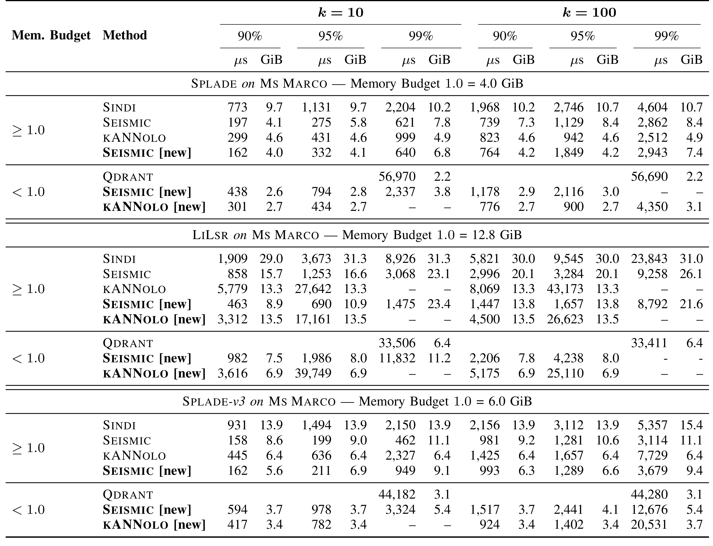
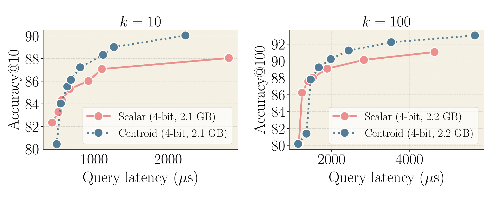

Compact and Efficient Indexes for Learned Sparse Retrieval：把稀疏检索的内存成本拆到选择与评分两层
这篇论文由第一作者 Franco Maria Nardini 所在的 ISTI–CNR 主导，合作作者来自 University of Pisa 和 Linkup；Cosimo Rulli 的相关工作在 ISTI–CNR 任职期间完成。论文于 2026 年 10 月 8 日公开，讨论如何让学习式稀疏检索同时获得紧凑索引和微秒级查询效率。论文入口。作者报告实现使用 Rust，并将正排压缩集成到 vectorium，以接入 SEISMIC 和 KANNOLO；本轮未核验到新方法的独立公开实现入口，原文所列 SINDI 仓库属于比较基线，不能当成本工作代码。以下数字来自原论文实验，本轮未做独立复现。
学习式稀疏检索已经把查询时延降到微秒级，但索引仍需要数 GiB 甚至更多内存，内存因此成为首要瓶颈。要在保留现有查询效率的同时显著缩小索引，必须同时压缩负责选择候选的倒排结构，以及负责计算候选分数的正排向量。
1. 背景和问题
学习式稀疏表示把查询和文档编码到词表大小的高维空间，每个非零分量对应一个词项，其值表示上下文中的重要性。与只统计原始词频的传统检索不同，模型会激活原文没有出现、却能表达相关语义的词项，因此同时具备词汇可解释性和语义扩展能力。对搜索系统而言，这使词汇不匹配的问题有所缓解；对检索增强生成而言，这样的向量也可以承担知识片段的第一阶段召回。论文关注的不是如何训练更好的文本编码器，而是已经得到这些向量之后，如何在服务器内存中组织它们并快速完成近似最大内积搜索。
稀疏不等于容易服务。传统倒排索引受益于自然文本词频的长尾分布、较短的查询以及可利用的分数上界。学习式表示改变了非零分量和权重的分布，扩展后的查询与文档激活更多词项，经典剪枝策略未必能维持原有的低时延。作者在引言回顾了稀疏近邻比赛中的图检索方案，以及此后为学习式表示设计的 SEISMIC、BMP、DSP、SINDI。这条历史线索说明，检索结构已经取得明显加速，但服务瓶颈从计算时间逐步转向索引驻留内存。不能因为向量名称中有“稀疏”，就默认它一定比稠密向量索引便宜。
本文最重要的结构划分是 selector 与 forward index。前者回答“哪些文档值得计算分数”，后者回答“选中的文档与查询究竟有多相似”。SEISMIC 的 selector 是经过截断、分块的倒排列表：每个词项指向可能相关的文档，各块配有用于快速判定的摘要。forward index 则按文档保存其完整稀疏支持集及权重，候选被访问时，从这里读取表示并做点积。即使最终只返回十个结果，selector 也可能检查很多块，forward index 也可能评分很多候选，两者会分别产生元数据、访存和算术成本。
原始 SEISMIC 的摘要不是普通均值，而是取块内各分量最大值构造的合成向量。在查询和文档权重非负的前提下，完整摘要的点积能够覆盖块内任意文档的分数，所以它很适合做排除判断。但一个块中不同文档的支持集叠加后，摘要支持集会膨胀。实际系统通过保留一定质量比例的高权重分量，以及单字节量化来压缩摘要，仍然要存很多摘要向量。论文给出的典型解释是，约五百万个块摘要、每块约一百个非零分量，会占据不可忽视的总空间。在约七 GiB 的索引例子里，它们占近一半；这并不是说所有配置都固定为七 GiB，而是说明辅助选择结构也可能与数据本身一样昂贵。
作者因此提出一个有风险但自然的替换：既然一个块已被聚成几何上相近的文档，能否用块内一篇真实文档代表它？如果只保存代表文档的标识，就无需再保存一份合成稀疏向量。问题在于，真实文档无法同时覆盖所有成员的最大分量，更不能保证对任意查询都提供分数上界。内存收益与剪枝可靠性于是直接发生冲突。这是本文必须通过实验解释的取舍，不能把“摘要换成代表点”简单写成无损优化，也不能因为总系统在某些比较中更快，就推断代表点本身提升时延。
正排一侧的问题不同。每个非零项由分量编号和权重组成，缩小其中任何一项都能降低集合总体存储。分量编号排序后可用相邻差值编码，但词表的原始编号由 tokenizer 决定，不保证经常共现的词项靠近。作者先做词表重排，再压缩差值，是为了把语义共现转成编码上的局部性。权重一侧则利用每个分量自己的分布拟合量化器，避免所有词项被同一个全局范围支配。这两种压缩作用于表示存储，而不是修改编码器训练过程，因而更容易作为系统组件被不同选择结构复用。
然而，压缩率更高也不自动意味着查询更快。如果文档向量先完整解码进临时数组，再交给评分内核，省下的存储可能被额外写入、读出和分支消耗抵消。因此论文把“怎么压缩”与“怎么计算点积”一起设计，强调在 SIMD 寄存器中融合解码、取查询权重和累加。这也解释了为什么作者比较很多通用整数编码器，却最终选择并非位数最低的 DOTPACKING8：压缩的目标函数需要包含查询执行成本，而不只是文件大小。
还有一个容易被忽略的输入条件：不同稀疏模型生成的查询并不一样。SPLADE 的查询本身经过语义扩展，非零分量平均为四十三；LILSR 的查询采用学习得到的词项权重查表，平均只有六个非零项，文档却平均有三百八十七个。同样的点积内核在这两种输入上可能呈现相反表现。本文把 JUMPDOT 放在查询极短、文档很长的非对称稀疏场景，是针对输入结构做优化，而不是发布一个适合所有模型的通用替代内核。
对推荐系统的关联也需要说清：本文直接评测的是英文 passage 检索，不是点击率预测或个性化排序。可以迁移的部分在于候选召回系统中的两层数据结构、压缩评分融合以及按查询稀疏性选择执行路径。若推荐向量的分量是商品属性、内容标签或其他离散特征，类似结构有研究价值；但其权重是否非负、词表是否足够小、共现重排是否稳定，以及最终召回是否影响业务排序，均需另外验证。把系统优化作为可迁移的设计思路，与声称已在推荐业务证明有效，是两种证据等级。
进一步理解内存瓶颈时，应区分数据向量的基础规模与索引的辅助结构规模。前者随非零项总数变化，后者随倒排截断长度、块数和代表形式变化；增加精度所需的搜索宽度还会放大评分量。本文在同一编码器内比较不同内存预算，就是为了把这几个轴分开。若业务希望把更多集合副本或租户索引放入一台机器，省内存的收益可能来自减少分片和驻留成本，而不一定表现为单次查询更快。这是对实验应用价值的个人解释，并非原文测得的部署收益。
2. 方法
2.1 从分块倒排列表到 medoid 选择器
SEISMIC 先按每个分量的权重降序形成倒排列表，再平均截断到参数所指定的长度，只保留更重要的 posting。随后采用浅层的内积聚类将列表分成若干几何相近的块。原方法为每个块生成逐分量最大值摘要，再截取质量占比较高的分量并量化。本文保留分块骨架，将代表信息替换为块内与均值最接近的真实文档，称为 medoid。它和通常以距离和最小定义的聚类中心点存在定义差别，这里应该以原文的内积准则为准。
符号解释：$B$ 是一个倒排块的文档向量集合，$|B|$ 是成员数，$\bar B$ 是逐分量均值，$x$ 是块中的真实文档，$\operatorname{med}(B)$ 是与均值内积最大的成员。这个公式优化的是块代表的选择，不是新的编码器训练目标。索引只保存该成员标识，向量坐标复用正排存储；论文把典型的约四百字节摘要替换为一个八字节文档标识。省下的元数据也允许在相同空间预算下使用更细的分块，但更多块仍会产生访问开销，不能把标识缩小比例当作整个索引的缩小比例。
原始完整摘要 $\phi(B)$ 满足 $\langle q,\phi(B)\rangle\ge\langle q,x\rangle$，但 medoid 仅是块分数的估计，可能远低于块内最大值。查询时仍借助 heap factor 放宽访问条件：代表分数超过当前第 $k$ 名阈值乘以折扣系数，就进入块评分。折扣越小，越不容易错过块，也越可能检查更多文档。这不是安全剪枝证明，而是通过准确率目标调节近似搜索。原文还指出，经过质量截断的摘要本来就不再完全保守，medoid 是更强的近似，而非第一次引入近似。
代表点存放在正排中，意味着查询访问它们要做随机访存，不能再像摘要矩阵那样直接批量扫描。作者以八个 medoid 为一批，先发预取请求，再计算八次点积，用计算与访存的重叠缓解缓存未命中。这个细节体现了选择器压缩与正排评分的耦合：虽然逻辑上是两个组件，代表点复用正排后，正排布局会同时影响候选选择和候选重排。该策略可以降低访存代价，但没有恢复 medoid 不具备的上界属性。
2.2 查询支持集驱动的 JUMPDOT
稀疏点积只需要处理共同非零分量。原文比较有序支持集的双指针 merge，与先把查询转成稠密数组、再扫描文档的 densified 路线。merge 占用较小，却在逐项比较时容易出现不可预测分支；densified 执行路径规整，文档编号直接索引查询权重，适合 gather 与向量化，但无论查询多短，都需遍历文档支持集。
符号解释：$s_q$、$s_x$ 分别是查询和文档的非零支持集，$q_c$、$x_c$ 是分量 $c$ 的权重；$d_q$ 是把查询散射到词表大小数组后得到的稠密查表表示，未激活位置为零。右式描述 densified 内核，虽然含很多乘零项，却允许按文档连续扫描并进行 SIMD gather。这里的优化意义是把分支与访存模式转化为硬件友好的执行路径，数学上的点积定义没有改变。
JUMPDOT 则把文档分成固定大小的有序块。在未压缩布局里，一个块包含十六个编号和十六个半精度值，恰好对应一条六十四字节缓存线；末尾不足部分补齐。处理当前查询分量时，先看块内最大编号，若仍小于查询编号就直接跳过。可能命中的块才把查询编号广播，与块中编号一次 SIMD 比较，通过掩码选出最多一个匹配值并累加。分支数量由逐项降低到逐块，同时可以在查询支持集耗尽时提前结束。
压缩版本 DOTPACKING8-J 的块大小是八，额外在表示头部保存每块最大编号。若查询编号超过块最大编号，不仅免做乘法，连该块的解压都可以省略；要访问时再按 DOTPACKING8 解码并匹配。代价是新增未压缩最大编号头部，因此它相对普通压缩版本占用更多内存。作者只在 LILSR 采用此路径，因为查询仅含少数非零项，跳块概率高；对 SPLADE 和 SPLADE-v3，原 densified 内核仍更快。执行路径应随查询与文档支持集的相对长度决定。
2.3 重排差值编码与 SIMD 融合评分
分量编号本身不会影响内积，只要查询和文档使用相同置换即可。论文把文档与词项的关系建成二分图，用递归图二分得到词表置换，使共现分量在新编号空间中更接近。排序编号再转为相邻差值后，SPLADE-v3 的差值经验熵从每项 8.29 bit 降至 6.92 bit，中位差值从七十二降至十三。这样的局部性更适合按 bit 打包，避免 VByte 必须以字节为单位存储的浪费。
DOTPACKING8 每八个差值为一块，用四 bit selector 表示该块 bit 宽度，payload 连续水平打包。因为八项总长度是八乘位宽，块起点自然字节对齐；在本文编号范围内，可以通过一次一百二十八 bit 读取覆盖块 payload，随后广播并使用预计算的 shuffle、shift、mask 解码到八路寄存器。编号复原后直接 gather 查询权重，与文档值融合乘加。它没有把完整解压向量写进中间数组，而是让解码结果马上参与评分，从而减少冗余内存流量。
固定八项仍可能被离群大差值拉高位宽。DOTPACKINGDP 因而允许长度不超过十六的可变块，每块 selector 为八 bit，用动态规划选择总体存储代价最小的切分，并强制硬件可读取边界。原文式（1）可概括为：
符号解释：$C[i,s']$ 是编码前 $i$ 项、结束 bit 偏移为 $s'$ 的最小 bit 成本，$l$ 是末块长度，$b_{i,l}$ 是末块所需最大位宽，$s$ 是此前的字节内偏移，$8$ 是 selector 成本。$\operatorname{safe}$ 表示八项片段必须在一百二十八 bit 读取窗口中，较长块的前八项和剩余部分都要满足读取安全条件。这个优化目标是索引构建时的压缩成本，不是训练 loss；更小的最优存储成本仍可能增加评分时拼接不同长度片段的复杂性，所以其端到端时延需要另测。
作者还利用聚类参考列表压缩跨文档冗余：为一个簇存放常见分量列表，把命中分量表示成列表内位置，其余作为残余序列。两条递增序列独立编码，得到 CDOTPACKING8 和 CDOTPACKINGDP。这里第一次 gather 把局部编号转成全局编号，第二次 gather 再读取查询值；它保持寄存器融合流程，却引入双重间接访问。参考列表固定为每簇五百一十二项，增大列表能覆盖更多文档项，同时又扩大局部编号范围，因而收益并非无限增长。论文用这一设计展示跨集合冗余的空间收益，也用消融表明确它的时延成本。
2.4 逐分量值量化与查表重建
值压缩使用每个分量自己的量化范围或码本。词表约三万项，每项维护少量参数或十六个码字，其元数据相对数百万文档正排较小。均匀量化把该分量的值范围划成固定格点；非均匀量化则用一维 k-means 拟合更符合分布密度的重建值。两者都不是对所有词项共用一个全局四 bit 码本，也不是把整条向量联合做 product quantization。
符号解释：$m_c$、$M_c$ 是分量 $c$ 的非零权重最小与最大值，$b$ 是存储 bit 数，$v_c$ 是原值，$z_c$ 是整数码，$\bar v_c$ 是重建值。原文观察 SPLADE 类分量的最小值平均低于 $10^{-4}$，于是省去偏移，采用 $\bar v_c=w_cz_c$，把查询权重与步长的乘积预先计算，使内层更接近一次 FMA。省略偏移是依赖这些数据分布的近似，不应不加检查地用于权重可负或最小值较大的新任务。
非均匀方案为每个分量学习十六个重建值，以均匀量化初始化，迭代十次。查询到来时，预先计算该查询分量与十六码字的乘积，评分只需根据文档分量编号和四 bit 码进行 gather、累加。这样可以提高小 bit 预算下的准确率，但查询查表数组扩大为原稠密查询数组的十六倍，缓存压力随之增加。论文报告全扫描情形点积慢约三成，说明更高量化保真也需要硬件代价。是否采用质心量化，应同时结合位预算、目标近邻保持率和实际候选数，而非只看重建误差。
3. 实验结果
3.1 数据、指标以及值量化的损失
实验使用 MS MARCO 的八百八十万 passages 与 dev.small 的六千九百八十个查询，三种编码器分别为 SPLADE、LILSR 和 SPLADE-v3。平均文档/查询非零项数依次为 119/43、387/6、170/25。论文列出的编码器 MRR@10 分别是 38.3、38.8、40.2，属于已有表示的效果背景；索引实验的核心指标是 Accuracy@10 与 Accuracy@100，即近似结果中保留精确穷举 top-k 邻居的比例。Accuracy@k 不等于基于相关性标注的 Recall，也不能直接当作 MRR 或 NDCG。
机器为 Intel Core i9-9940X、3.30 GHz，十四物理核、二十八硬件线程、一百二十八 GiB 内存；查询实验采用单线程。时延计入检索执行，但排除查询编码时间。对每个准确率目标，作者从参数组合中选择满足目标与内存预算的最快配置，所以不同列不是同一固定配置上的自然变化，也不能把某一列的内存数字与另一列的时延拼在一起。内存预算以原稀疏向量按十六 bit 编号、十六 bit 值存储时的数据规模为单位，各编码器的基准规模不同。

Figure 1 在一千个抽样查询上，比较不同 bit 数值量化后对精确近邻的保持程度，未通过扩大候选集合做 oversampling。左侧两图表明从二 bit 到四 bit 是重要的精度恢复区间，之后五到八 bit 的收益逐步缩小。右侧给出四 bit 的具体结果：对十邻居，均匀量化为 0.887，质心量化为 0.909，差异约二点二个百分点；对一百邻居，相应为 0.924 和 0.944，约二个百分点。这里应该用百分点描述绝对指标差异，而不是声称效果提高了二成。
这组结果回答的是“值量化是否严重破坏邻居关系”，并未同时包含 medoid 选择器的漏块损失。量化改变候选评分，块选择改变候选是否被访问，两种误差来源需要分开。质心分布更贴近各词项的实际取值，因此在低 bit 下有优势，但单独的保持率还不能决定最终服务方案：它需要更大的查询查表数组，原文也报告全扫描评分成本增加。四 bit 被称为有吸引力的工作点，是因为值存储相对八 bit 减半且近邻质量损失较小，不是说整个索引必然减半，更不是说查询延时也减半。
这张图也提醒复现时应保留精确穷举近邻作为共同参考。若均匀量化以自己的量化全扫描结果为真值，而质心量化以原始浮点结果为真值，比较就失去意义。查询抽样数、是否 oversampling、分量码本是否独立训练，以及存储中有没有计入码本和 offset 元数据，都影响解释。本文已有图支持四 bit 的保真收益，但没有按领域或查询类型展开尾部分布，线上需要重点观察少数关键词查询和语义扩展查询是否具有不同损失。
从图中还可以看到，一百邻居的保持率高于十邻居，并不表明前一任务在检索意义上更简单：较大的集合允许更多相邻分数结果互换而仍被计为交集。接近阈值的名次扰动对较小的返回集合比例影响更大，因此不同 k 的指标值需要分别比较，不能将一百邻居的 0.944 用作十邻居性能。
3.2 压缩密度为什么不能代替系统时延

Table I 的 BPI 只统计分量编号编码，右列进一步利用簇参考列表，不包含值码；它与下一张正排实验表中的 BPE 概念不同。普通重排差值上，EXPONENTIAL-GOLOMB 仅为每项 7.25 bit，DOTPACKINGDP 为 7.50，DOTPACKING8 为 8.24，而 DOTVBYTE 为 9.96。若只按这一列选方法，会倾向最紧凑的标量编码。但这张表实际只是筛选值得进一步实现的候选，不能推导出它们查询最快。编码器的批量解码形态以及是否融入点评分才决定服务效率。
簇参考压缩让 EXPONENTIAL-GOLOMB 降至 6.22，DOTPACKING8 降至 7.35，展示文档间共享支持集确实有冗余可利用。但 DOTVBYTE 从 9.96 到 10.10，OPTPFOR 从 8.94 到 9.27，也有反向变化。参考分解会把文档拆成更短序列，原来需要长块来摊薄元数据的方法可能吃亏，所以集合层面的信息熵下降并不保证每种实际编码都省空间。论文同时解释 SIMD-BP128 达到 12.25 bit：典型文档只有一百多项，大块宽度容易被少数离群项决定，无法利用短序列内部的局部均匀性。
DOTPACKING8 的八项粒度既避免一百二十八项大块的浪费，又能正好匹配八路 gather，是其系统位置。DP 在位数上进一步收紧，却要处理可变长度片段与残余项拼接；簇参考则需先由局部位置查询全局编号，再查询权重。两者都说明“更低 BPI”的收益必须支付指令或依赖链成本。对于内存压力很大的应用，这些路线仍可能值得接受，但不能用这张密度表替代真实查询时延、缓存缺失或吞吐测量。本文后续消融恰好把这些候选放到相同评分管线中，避免靠孤立微基准选型。
另一层需要注意的是熵界的口径。表前的 6.92 bit 来源于差值汇总后的零阶经验分布，不是包含每条向量边界、块 selector 和所有索引元数据的最终系统下界。实际编码要保存这些可解码条件，所以与经验熵的差距并非全是实现浪费。参考分解后使用映射部分和残余部分的加权分布，也不能直接解释成最终进程驻留内存的同比下降。
3.3 medoid 单独省了空间，同时明显变慢

Table II 固定正排为 DOTPACKING8 加逐分量八 bit 值量化，占用 2.13 GiB，只改变块代表。90% Accuracy@10 时，倒排空间由 1.87 GiB 降为 0.47 GiB，但查询由 162 微秒升为 438 微秒，约慢 2.70 倍；95% 时，倒排由 1.97 GiB 降为 0.67 GiB，查询由 332 升为 794 微秒，约慢 2.39 倍。表内空间是倒排自身，不能把 0.47 GiB 写成全系统索引大小；加上固定正排后才对应主结果中的约 2.6 GiB 总量。
原文进一步测量访问块的代表分数与真实块最大分数之比。截断后的摘要在 68.7% 的已访问块中已经低估最大分数，平均比例为 0.92；用 medoid 后平均为 0.86，同一构建和查询参数下 Accuracy@10 从 95% 降到 90%。因此不能把完整摘要的严格上界性质直接赋予被截断后的实现，更不能赋予 medoid。为了恢复 95%，heap factor 从 0.9 放宽到 0.7，查询评分文档数由六百六十四增至二千八百七十五，约四点三倍，这对变慢给出了具体链路解释。
medoid 的合理用途是压低驻留内存，帮助原来放不下的配置进入可运行范围。它在内存受限场景可能比其它高内存竞争系统仍然快，但这属于跨系统的速度空间折衷，不等同于内部模块加速。还需注意作者正文把 794 微秒配置引用成 Table VI，全文可识别主结果实际编号是 Table V；本笔记按实际表编号表述，不增造 Table VI。此处的独立消融足够清楚地限定事实：代表点换摘要使选择信号更弱，必须以更多候选评分恢复质量。
这个消融对于服务容量判断尤其有用。若机器能够容纳摘要版本，应先比较其较低时延；若只能容纳代表点版本，则应核对质量阈值下每查询实际评分量，评估是否仍满足吞吐要求。约四点三倍的候选增幅是此次配置下的观测，换查询分布或分块粒度可能变化。对于热点查询，缓存命中或预取重叠也可能影响代价，论文平均时延没有拆分这些条件；因此容量计划仍需在线负载补测。
3.4 正排压缩中，DOTPACKING8 的均衡来自融合

Table III 保持倒排、剪枝参数、候选集合、词表重排和值量化相同，只改变正排分量编码。PLAIN-U16 为 3.03 GiB，DOTPACKING8 为 2.13 GiB，约省 29.6%；三个 Accuracy@10 目标的时延分别由 179/281/2080 微秒变成 145/254/1674，均有改善。与 DOTVBYTE 的 2.35 GiB、154/250/1695 比，DOTPACKING8 少约 9.4% 空间，90% 与 99% 略快，95% 的 254 对 250 则略慢，应描述为接近而不能写成所有目标都胜出。
表中最小的 CEXP-GOL 仅为 1.92 GiB，却达到 663/1207/10920 微秒，尤其高准确率时大幅落后。普通 EXPONENTIAL-GOLOMB 2.03 GiB，99% 时 11757 微秒，也说明标量解码成本不能忽略。DOTPACKINGDP 达到 2.07 GiB，但时延 258/463/4121；簇参考 CDOTPACKINGDP 的 2.01 GiB，对应 312/568/5032。省出的几十或一百余 MiB 如果使候选点评分显著变慢，在低时延服务里未必值得。这不是否定 DP 的编码最优性，而是它最小化的存储目标和实际查询目标不同。
CDOTPACKING8 以 2.07 GiB、210/381/3269 呈现介于高压缩标量方案与普通 DOTPACKING8 的折衷。双 gather 已经避免逐项标量回查，仍比单次 query gather 多一条编号依赖链；从局部索引得到全局编号后才能读取权重，硬件不能完全重叠这两步。论文据此在主实验选普通 DOTPACKING8 作为分量压缩，体现其并非追求理论最小 bit 数，而是选择空间与点评分速度兼顾的可实现布局。这个消融也应区分 BPE 与 BPI：BPE 包含分量和量化值，因此不能把表内 17.28 与前表 8.24 当成矛盾。
还应注意，表中固定的候选集合是隔离编码作用的重要条件。若换一种编码同时改变剪枝阈值，最终时延差异就无法全部归因于解码器。作者把搜索参数、候选集合与值表示保持一致，使这一结果比单独跑解压速度更贴近真实评分，同时仍有明确因果边界。迁移时可以保留这一对照设计，再额外测冷缓存与热缓存，区分压缩减少内存流量带来的收益和指令执行成本。这里没有给出跨 CPU 架构的普遍排序，AVX2 的指令形状是当前结果的组成条件。
3.5 LILSR 的查询非对称性决定内核优势

Table IV 首先比较未压缩正排内核。densified 的三个准确率目标为 858、1253、3068 微秒，merge 为 628、931、2307，JUMPDOT 为 407、594、1475。JUMPDOT 在三个目标都约快 2.1 倍，内存从 15.7/16.6/23.1 GiB 变为 16.0/16.9/23.4，增幅低于约百分之二。多出来的是分块布局和补齐等结构成本，不能写成完全零开销。相比 merge，块级可预测控制流与一条 SIMD 指令匹配多个文档项获得更高效率。
压缩组的 DOTPACKING8 为 2276/4703 微秒、6.6/7.2 GiB，DOTPACKING8-J 为 982/1986 微秒、7.5/8.0 GiB，对应约 2.3 和 2.4 倍加速，代价是约十一到十四个百分点的额外内存比例。头部最大编号让无关块无需解压，但这个跳过功能必须付出存储。99% 目标压缩组未报告结果，横杠不能解读为零延时或百分之百失败，只能说该表没有提供满足该目标的可比配置。
这张表最需要限定适用范围。LILSR 平均六个查询项对三百八十七个文档项，很多块无交集，所以 query-driven skipping 极其有效。SPLADE 以及 SPLADE-v3 的查询扩展后更长，逐查询项匹配和额外块元数据的成本可能超过收益；作者明确指出它们原 densified 内核仍最快。因而主实验为 LILSR 选择 JUMPDOT 或 DOTPACKING8-J，为其它模型保留 densified。“按输入稀疏性选择内核”有直接实验支持，“JUMPDOT 普遍比 densified 快”没有。将来若换成推荐查询，需要先测支持集长度分布，尤其尾部长度，而不是照抄平均六项条件。
从实现上看，跳块能否收益也依赖词表重排后的编号区间与查询项位置。语义共现让差值更小，有利于压缩；但查询项和文档块的交集概率决定能跳多少，这两个目标并不必然完全一致。原文没有展开重排与跳块收益之间的独立消融，因此不能断言同一置换在两个目标上同时最优。可以记录每查询跳过块比例与解码块数量，再按支持集长度分桶，检查加速是否集中在某些输入形态。
3.6 完整主结果：同准确率下移动速度空间边界

Table V 是原文第十二页的单张跨栏表，完整包含 SPLADE、LILSR、SPLADE-v3 三组，没有跨页拼接。预算单位分别对应 4.0、12.8、6.0 GiB 基准数据大小；标记大于等于一或小于一描述该组内存区间，不能在不同编码器间直接用倍数比较绝对内存。新 SEISMIC 根据目标选用正排压缩和必要的 medoid，表中同名方法跨列不是完全同一配置。SPLADE 90%、十邻居时，新版 162 微秒、4.0 GiB，相对 SINDI 773 微秒、9.7 GiB 明显改善；相对原 SEISMIC 197 微秒、4.1 GiB 也略有优势，但这不是全部目标的统一结论。
SPLADE 95%、十邻居，新版 332 微秒、4.1 GiB，原版 275 微秒、5.8 GiB，属于省内存但变慢；一百邻居 95% 的新版为 1849 微秒、4.2 GiB，原版 1129 微秒、8.4 GiB，进一步展示代价。当预算低于原数据大小，新版用 medoid 降到 2.6 或 2.8 GiB，对应 438 或 794 微秒。仍可快于 SINDI，却慢于原版较高内存工作点。KANNOLO 的压缩版本在该编码器下由约 4.6 降至 2.7 GiB，90% 与 95% 十邻居时延为 301/434，对原 299/431 基本保持，支持正排压缩可跨 selector 复用。
LILSR 的优势更强，但也要逐列读数。十邻居 95% 时，SINDI 为 3673 微秒、31.3 GiB，新 SEISMIC 为 690 微秒、10.9 GiB，加速约 5.32 倍、内存约少至原来的三分之一；这为摘要中的最高 5.3 倍和约三倍少内存提供了明确工作点。比较对象是 SINDI，而不是原 SEISMIC 的 1253 微秒。十邻居 99% 时新 SEISMIC 为 1475 微秒、23.4 GiB，相对原版 3068 微秒更快，但内存比原 23.1 GiB 略多，不能从这一列推出同时省内存。低预算十邻居 90% 为 982 微秒、7.5 GiB，相对 SINDI 1909 微秒、29.0 GiB，约 1.94 倍快、3.87 倍少内存，是摘要中另一组极受限比较的可验证来源。
SPLADE-v3 表现又有所变化。十邻居 90% 时新 SEISMIC 为 162 微秒、5.6 GiB，与原 158 微秒、8.6 GiB 时延接近；95% 为 211 微秒、6.9 GiB，原 199 微秒、9.0 GiB；99% 新版 949 微秒、9.1 GiB，对原 462 微秒、11.1 GiB 明显变慢。KANNOLO 压缩版低预算为 3.4 GiB，相比原 6.4 GiB 接近减半，但高准确率的一百邻居配置达到 20531 微秒、3.7 GiB，不能笼统称所有目标效率无损。模型支持集长度、图遍历以及目标 k 都会改变压缩收益的表现。
QDRANT 提供通用精确稀疏搜索的参照，在表内达到约五万七、三万三、四万四微秒，而专用近似结构大多为几百到几千微秒。这个结果说明专用结构在作者平台上更适合此类低时延目标，但精确与近似搜索的服务契约不同，不能只看速度就断言通用引擎没有价值。表中横杠代表没有列出相应工作点，也不能拿它替代失败率指标。主结果最大的贡献是提供多个准确率和预算下的可选边界，而不是给出一个同时统治空间、时延、精度的单配置。
3.7 超紧凑索引：四 bit 质心量化的 Pareto 改善

Figure 2 将均匀与质心量化放进同一压缩分量表示和 SEISMIC 检索管线，比较完整索引下的时延—准确率。十邻居时，质心路线在约 2.1 GiB 内存下到达约 90% Accuracy@10；一百邻居时，约 2.2 GiB 达到超过 92% Accuracy@100。这里是整个倒排加正排的规模，和只统计值存储减半不同。相对于 SPLADE 的 4.0 GiB 预算单位，约处于一半左右，展示了原 SEISMIC 更低内存区间仍有实际可运行配置。
曲线同时表明均匀量化在部分低时延点稍快，但上限更早饱和；质心方案付出的查表缓存成本，换来了更精确的重建，因此在希望进一步提高保持率时形成更好的 Pareto 边界。十邻居图的右侧均匀量化仍未超过质心的较快高精度点，说明一些误差来自表示损失而非单纯访问不足，扩大搜索成本未必能追回。这个机制与 Figure 1 的量化保真结果相呼应，但两者实验层次不同：前者隔离量化，后者包含整体索引查询。
本文对“约两 GiB”的解释应保持范围：这是特定数据集、编码器、准确率和配置的内存结果，不是任意学习式索引的固定大小。它也不旨在压过所有高内存最快配置，原文明确强调内存受限工作区。部署中若为了压低内存而使用这条路线，需要把查询表数组、并发查询个数、码本元数据和索引更新峰值计入进程预算；作者单线程实验没有证明这些并发峰值一定可控。这里已经有强的离线近邻与时延证据，下一步应围绕服务边界评测，而不是把曲线转写为无限制的系统结论。
图中单位标识使用 GB，而实验正文和整体表报告 GiB，本笔记的约 2.1/2.2 GiB 依据作者正文，不尝试利用图例推算更精确的字节规模。这一口径差异在精确容量配置时需要回到实现的内存统计核对，当前曲线支持的是数量级和趋势，而非一个经独立验算的绝对字节承诺。
4. 总结
我的判断是，这篇工作最值得学习的是把稀疏检索索引拆成可独立分析、又在访存上耦合的两层。medoid 利用已有文档避免重复保存选择摘要，DOTPACKING8 利用词表局部性和八路寄存器形状降低评分的单位成本，逐分量量化利用不同词项分布压缩值。JUMPDOT 则让极短查询能跳过大量长文档块。每个模块都有具体输入条件和代价，论文用独立消融和完整主结果把它们连接起来，因此比只报一个总加速数字更容易判断迁移价值。
不能混淆的三件事是：代表信息变紧凑不等于剪枝更快，编号编码 bit 更少不等于评分更快，近邻保持率更高不等于相关性排序效果更高。Table II 说明恢复同准确率需要访问更多文档；Table III 说明标量解码可能抵消存储收益；Table V 说明某些列省内存但增加时延。这些结果没有削弱工作，而是把设计适用范围揭示得更完整。对以低内存驻留为首要目标的系统，这种取舍可能比绝对最低延时更有价值。
第一项局限是评测范围集中在 MS MARCO 英文 passages 和三种共享约三万词表的编码器，缺少其它语种、领域以及动态集合的直接证据。词表很大时编号表示、码本规模和查询查表缓存都会改变；权重不满足非负假设时，摘要上界推导及偏移省略也需要重审。第二项局限是单线程 CPU 平均时延不覆盖多线程缓存争用、尾延迟和在线更新，尤其 medoid 随机读取、预取批次和质心量化的大查询数组在高并发下可能出现不同表现。这属于待验证的系统条件，不应提前断言一定失败。
第三项局限是 Accuracy@k 对齐的是精确向量近邻，而非用户相关性或最终生成质量。错过的邻居是否集中在重要语义片段、相近权重文档交换是否影响后续重排，都未被该指标单独揭示。第四项局限是 medoid 的判别依赖聚类紧密程度，缺少针对困难查询的理论保真保证；原文已经看到平均代表分数降低和候选数增加，仍未展开各类查询的漏块分布。另外，本轮没有独立复现，未核验新实现的公开入口，Rust 与 SIMD 编译参数等复现细节需要官方发布进一步补齐。
后续跟进可以聚焦三个有辨识度的实验。首先，检验多个代表或学习代表是否能恢复摘要的剪枝强度，同时把代表数量的内存成本与评分数完整纳入；这也对应作者提出的未来方向。其次，在保持 selector 参数一致时，对不同支持集长度桶测 DOTPACKING8、DOTPACKING8-J 和 densified，并加入多线程、缓存统计与高分位时延，判断内核切换边界。最后，把精确邻居保持与 MRR、NDCG 及 RAG 下游答案指标同时测量，检查低内存曲线是否仍保留任务效果。
对推荐召回的个人启发是，可以先复用正排融合评分这一较独立的组件，随后再研究 medoid 对候选选择的影响，而不是一次替换全部路径。实验需要记录原向量表示、分量重排、值量化、候选筛选和最终重排的每一步误差，使收益能定位到具体环节。本文已经证明正排压缩能接入倒排与图两种选择器，但这仍只是搜索系统内的可复用性证据；进入用户建模或广告召回后，应以业务向量分布和任务指标为准。这样的迁移路径能保留论文最有价值的硬件与结构洞见，同时避免把局部成功写成普适结论。